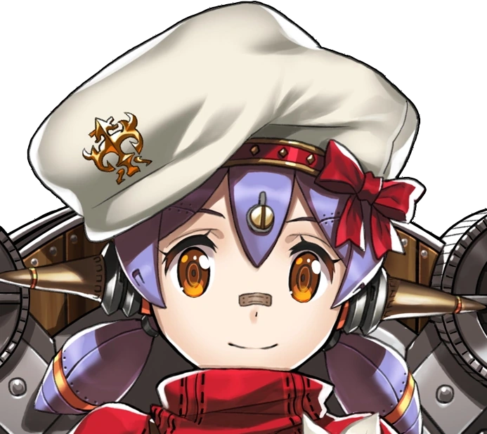

Poppi

In Xenoblade Chronicles 2, Poppi Alpha, also known as Poppi, is an Artificial Blade. "Masterpon" is the name she calls Tora. She practices the Nopon language flawlessly and has a strong steel body. Despite the fact that Tora is not a Driver and Poppi is not a Blade that was naturally awakened from a Core Crystal, they function as a sort of Driver and Blade team in combat. With a Tank class, she initially uses the power of the earth, but Poppiswap allows her to equip wind, ice, and electric element cores.
Quotes
"Masterpon is Poppi's only Driver."
---
"Poppi actually feature-complete, but Masterpon want to keep tweaking UI."